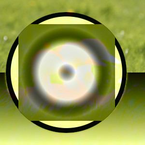

The “LCh” group contains layer modes that make use of the LCh color model. “LCh” stands for Lightness, Chroma, Hue. It is mathematically derived from the CIELAB reference color space. See also CIELCh.
- LCh Hue
-
LCh Hue mode corresponds to HSV Hue but is based on different mathematical formulas.
- LCh Chroma
-
LCh Chroma mode corresponds to HSV Saturation but is based on different mathematical formulas.
- LCh Color
-
LCh Color mode is a combination of LCh Chroma and LCh Hue, and corresponds to HSV Color, but is based on different mathematical formulas. See A tutorial on GIMP's very awesome LCH Blend Modes for information on using this layer mode.
- LCh Lightness
-
Figure 8.44. Example for layer mode “LCh Lightness”

Top layer at 100% opacity using “LCh Lightness” mode.
LCh Lightness mode corresponds to HSV Value, but is based on different mathematical formulas. See A tutorial on GIMP's very awesome LCH Blend Modes for information on using this layer mode.
- Luminance
-
Luminance mode is similar to CIE luminance, but does not alter saturation. It divides the upper layer luminance by the lower layer luminance; then uses that result to multiply with the lower layer component.